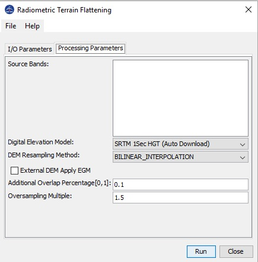

Terrain Flattening Operator
When land cover classification is
applied to terrain that is not flat, inaccurate classification result
is produced. This is because that terrain variations affect not
only the position of a target on the Earth's surface, but also the
brightness of the radar return. Without treatment, the radiometric
biases caused by terrain variations are introduced into the coherency
and covariance matrices. It is often seen that the classification
result mimic the radiometry rather than the actual land cover. This
operator removes the radiometric variability associated with topography
using the terrain flattening method proposed by Small [1] while leaving
the radiometric variability associated with land cover.
Input and Output
- The
input to this operator should be calibrated beta0. For polarimetric SAR
product, it should be in T3, C3, C2 matrix format.
- The
output of this operator is terrain flattened gamma0. For polarimetric
SAR product, the output is terrain flattened coherency or covariance
matrices in T3, C3 or C2 format.
Parameters Used
The following processing parameters are used for this operator:
- Source Bands: source product bands. User can select one or
more bands for terrain flattening. If no band is selected, by default
all bands are selected for terrain flattening.
- Digital Elevation Model: available digital elevation models used in computing local illuminated area.
- DEM resampling Method: resampling method used in getting elevation from DEM.
- Additional
Overlap Percentage: To perform terrain flattening to a given tile,
pixels from adjacent tiles are generally needed due to the topography
in the image area. The overlap percentage is automatically
computed using the DEM. However, if the computed overlap is not enough,
then tiling effect can be observed in the terrain flattened image. In
this case, user can increase the Additional Overlap Percentage.
- Oversampling
Multiple: The Terrain Flattening algorithm requires that the DEM
resolution is higher than the image resolution. Therefore, the DEM is
generally oversampled by a factor automatically computed based on
the DEM and image resolution. However, if the automatically computed
oversampling factor is not large enough, then artefacts can be observed
in the terrain flattened image. In this case user can increase the
oversampling factor by multiplying it with this coefficient.

Reference:
[1] David Small, "Flattening Gamma:
Radiometric Terrain Correction for SAR imagery", IEEE Transaction on
Geoscience and Remote Sensing, Vol. 48, No. 8, August 2011